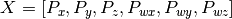
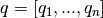
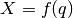
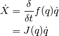
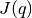
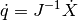
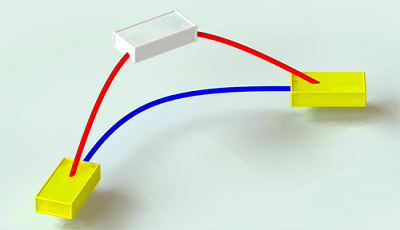

Cartesian control¶
NAOqi Motion - Overview | API | Tutorial
What it does¶
These APIs are dedicated to control directly the Effectors of NAO in a Cartesian space using an inverse kinematics solver.
Each effector can be controlled individually, or in parallel with other.
- There are two kinds of inverse kinematics(IK) solver in ALMotion module:
- a classical IK solver which uses only the joints of the effector chain to reach a target.
- a generalized IK solver (also called Whole Body control) which uses all the robot joints to reach a target.
- There are two ways of controlling an effector:
- animation methods (time fixed, blocking function):
- reactive methods (could be changed every ALMotion cycle, non blocking function):
There are also some whole Body user friendly function (balance control, safe Cartesian command and so on).
The details of these functions are in Whole Body control section.
How it works¶
The geometric model of NAO gives the effector positions () relative to an absolute space in function of all the joint positions ().

The direct cinematic model is the derivative of the above equation with respect to time.

where  is also called the Jacobian matrix.
In our case, we want to control an effector and deduce the joint position. So, we look at the inverse kinematic model:

In many cases,  is not inversible directly (matrix not square), in our case we use the
Moore-Penrose pseudoinverse to solve mathematically this problem.
is not inversible directly (matrix not square), in our case we use the
Moore-Penrose pseudoinverse to solve mathematically this problem.
Note
The classical IK solver due to robot singularity configuration could create huge joint velocity and NAO could lose balance and fall.
For this reason, all Cartesian motions should be tested in a simulator before being tried on the robot.
Getting started¶
Essential information to deal with Cartesian control:
Position and orientation¶
Position and orientation of a part of the robot are controlled using two different systems:
- Position6D and
- Transform.
Definitions and calculation rules are available in the ALMath library: libalmath Overview.
Effectors¶
An effector is a predefined 3D point in NAO and it’s generally the end of a chain. We choose these points because with a biped robot, we want for example:
- control the hand in order to catch an object or
- control the foot to kick in a ball.
Cartesian methods accept commands for the five chains plus “Torso”. The position of these control points is shown below. These effectors names are identical to the chain name except for “Torso”.
| Effector name | Position | End transform |
|---|---|---|
| “Head” | At the neck joint | Position3D(0.0, 0.0, 0.0) |
| “LArm” | Inside the hand | Position3D(HandOffsetX, 0.0, -HandOffsetZ) |
| “LLeg” | Below the ankle | Position3D(0.0, 0.0, -FootHeight) |
| “RLeg” | Below the ankle | Position3D(0.0, 0.0, -FootHeight) |
| “RArm” | Inside the hand | Position3D(HandOffsetX, 0.0, -HandOffsetZ) |
| “Torso” | A reference point in the torso | Position3D(0.0, 0.0, 0.0) |
All the points are defined in relation of the torso position and depend of your NAO Version, you could access to the position of effectors by following the link below:
- NAO V4: Links
- NAO V3.3: Links - V 3.3
- NAO V3.2: Links - V 3.2
Spaces¶
When creating a command for NAO, much attention needs to be placed on the space used to define the command, as a mistake in space could lead to disastrous results.
- FRAME_TORSO: this is attached to NAO’s torso reference, so moves with NAO as he walks and changes orientation as he leans. This space is useful when you have very local tasks, that make sense in the orientation of the torso frame.
- FRAME_WORLD: this is a fixed origin that is never altered. It is left behind when NAO walks, and will be different in z rotation after NAO has turned. This space is useful for calculations which require an external, absolute frame of reference.
- FRAME_ROBOT: this is average of the two feet positions projected around a vertical z axis. This space is useful, because the x axis is always forwards, so provides a natural ego-centric reference.
When executing a task, the space is determined when the task begins, and remains constant throughout the rest of the interpolation. i.e. the interpolation, once defined, will not change as the reference changes due to the legs moving or the torso orientation changing.
Axis Masks¶
When controlling NAO’s arms, he does not have enough degrees of freedom to be able to realize a task that has six constraints.
Using an Axis Mask, you can define which axis you wish to control. The axis mask is passed as a single parameter (an int) which can be calculated using the definitions below:
#define AXIS_MASK_X 1
#define AXIS_MASK_Y 2
#define AXIS_MASK_Z 4
#define AXIS_MASK_WX 8
#define AXIS_MASK_WY 16
#define AXIS_MASK_WZ 32
import almath
#An Axis Mask for Position only: 7
axisMask = almath.AXIS_MASK_X + almath.AXIS_MASK_Y + almath.AXIS_MASK_Z
The axis mask is executed in the same space used to define your task. It has the effect of liberating the constraint on each axis which is not part of the mask. Note carefully that a mask in space FRAME_WORLD is likely to be very different to one in space FRAME_TORSO.
Note
For the Torso, LLeg and RLeg effectors, the axes which are not part of the mask will have a fixed position. i.e. they will not move while performing the task.
For the Head, LArm and RArm effectors, the axes which are not part of the mask are not constrained. i.e. free to move in order to perform the task.
SE3 Interpolation¶
SE3 Interpolation is used for all interpolations that are defined in Cartesian Space. It provides a spline-like interpolation which allows for initial speeds and points of passage to be taken into account, ensuring smooth trajectories that respect speed constraints.
Warning
If the desired motion is unfeasible, the robot can lose balance and fall. All Cartesian motions should be tested in a simulator before being tried on the robot.
Use Cases¶
Case 1: Arm trajectory¶
This example show a simple path composed of two control points, the target and the current position. It uses relative coordinates, so the current position is all zeros.
# -*- encoding: UTF-8 -*-
'''Cartesian control: Arm trajectory example'''
import sys
import motion
import almath
from naoqi import ALProxy
def StiffnessOn(proxy):
#We use the "Body" name to signify the collection of all joints
pNames = "Body"
pStiffnessLists = 1.0
pTimeLists = 1.0
proxy.stiffnessInterpolation(pNames, pStiffnessLists, pTimeLists)
def main(robotIP):
''' Example showing a path of two positions
Warning: Needs a PoseInit before executing
'''
# Init proxies.
try:
motionProxy = ALProxy("ALMotion", robotIP, 9559)
except Exception, e:
print "Could not create proxy to ALMotion"
print "Error was: ", e
try:
postureProxy = ALProxy("ALRobotPosture", robotIP, 9559)
except Exception, e:
print "Could not create proxy to ALRobotPosture"
print "Error was: ", e
# Set NAO in Stiffness On
StiffnessOn(motionProxy)
# Send NAO to Pose Init
postureProxy.goToPosture("StandInit", 0.5)
effector = "LArm"
space = motion.FRAME_ROBOT
axisMask = almath.AXIS_MASK_VEL # just control position
isAbsolute = False
# Since we are in relative, the current position is zero
currentPos = [0.0, 0.0, 0.0, 0.0, 0.0, 0.0]
# Define the changes relative to the current position
dx = 0.03 # translation axis X (meters)
dy = 0.03 # translation axis Y (meters)
dz = 0.00 # translation axis Z (meters)
dwx = 0.00 # rotation axis X (radians)
dwy = 0.00 # rotation axis Y (radians)
dwz = 0.00 # rotation axis Z (radians)
targetPos = [dx, dy, dz, dwx, dwy, dwz]
# Go to the target and back again
path = [targetPos, currentPos]
times = [2.0, 4.0] # seconds
motionProxy.positionInterpolation(effector, space, path,
axisMask, times, isAbsolute)
if __name__ == "__main__":
robotIp = "127.0.0.1"
if len(sys.argv) <= 1:
print "Usage python motion_cartesianArm1.py robotIP (optional default: 127.0.0.1)"
else:
robotIp = sys.argv[1]
main(robotIp)
Case 2: Torso and Foot trajectories¶
This example shows how to do simultaneous trajectories of the Torso and the legs. The non-controlled right leg, will behave as if it received a zero relative command.
- Lower the Torso and move to a point above the Right Leg
- Move and turn the Left Foot outwards, with an upright intermediate position.
# -*- encoding: UTF-8 -*-
'''Cartesian control: Torso and Foot trajectories'''
import sys
import motion
import almath
from naoqi import ALProxy
def StiffnessOn(proxy):
# We use the "Body" name to signify the collection of all joints
pNames = "Body"
pStiffnessLists = 1.0
pTimeLists = 1.0
proxy.stiffnessInterpolation(pNames, pStiffnessLists, pTimeLists)
def main(robotIP):
''' Example of a cartesian foot trajectory
Warning: Needs a PoseInit before executing
'''
try:
motionProxy = ALProxy("ALMotion", robotIP, 9559)
except Exception, e:
print "Could not create proxy to ALMotion"
print "Error was: ", e
try:
postureProxy = ALProxy("ALRobotPosture", robotIP, 9559)
except Exception, e:
print "Could not create proxy to ALRobotPosture"
print "Error was: ", e
# Set NAO in Stiffness On
StiffnessOn(motionProxy)
# Send NAO to Pose Init
postureProxy.goToPosture("StandInit", 0.5)
space = motion.FRAME_ROBOT
axisMask = almath.AXIS_MASK_ALL # full control
isAbsolute = False
# Lower the Torso and move to the side
effector = "Torso"
path = [0.0, -0.07, -0.03, 0.0, 0.0, 0.0]
time = 2.0 # seconds
motionProxy.positionInterpolation(effector, space, path,
axisMask, time, isAbsolute)
# LLeg motion
effector = "LLeg"
path = [0.0, 0.06, 0.00, 0.0, 0.0, 0.8]
times = 2.0 # seconds
motionProxy.positionInterpolation(effector, space, path,
axisMask, times, isAbsolute)
if __name__ == "__main__":
robotIp = "127.0.0.1"
if len(sys.argv) <= 1:
print "Usage python motion_cartesianFoot.py robotIP (optional default: 127.0.0.1)"
else:
robotIp = sys.argv[1]
main(robotIp)
Case 3: Multiple Effector Trajectories¶
The goal of this example is to simultaneously control three effectors: the Torso, the Left Arm and the Right Arm.
- Torso motion: non-blocking method;
- Right Arm motion: blocking method during the first half of torso motion;
- Left Arm motion: blocking method during the last half of the torso motion.
# -*- encoding: UTF-8 -*-
'''Cartesian control: Multiple Effector Trajectories'''
import sys
import motion
import almath
from naoqi import ALProxy
def StiffnessOn(proxy):
# We use the "Body" name to signify the collection of all joints
pNames = "Body"
pStiffnessLists = 1.0
pTimeLists = 1.0
proxy.stiffnessInterpolation(pNames, pStiffnessLists, pTimeLists)
def main(robotIP):
''' Simultaneously control three effectors:
the Torso, the Left Arm and the Right Arm
Warning: Needs a PoseInit before executing
'''
# Init proxies.
try:
motionProxy = ALProxy("ALMotion", robotIP, 9559)
except Exception, e:
print "Could not create proxy to ALMotion"
print "Error was: ", e
try:
postureProxy = ALProxy("ALRobotPosture", robotIP, 9559)
except Exception, e:
print "Could not create proxy to ALRobotPosture"
print "Error was: ", e
# Set NAO in Stiffness On
StiffnessOn(motionProxy)
# Send Robot to Pose Init
postureProxy.goToPosture("StandInit", 0.5)
space = motion.FRAME_ROBOT
coef = 0.5 # motion speed
times = [coef, 2.0*coef, 3.0*coef, 4.0*coef]
isAbsolute = False
# Relative movement between current and desired positions
dy = +0.06 # translation axis Y (meters)
dz = -0.03 # translation axis Z (meters)
dwx = +0.30 # rotation axis X (radians)
# Motion of Torso with post process
effector = "Torso"
path = [
[0.0, -dy, dz, -dwx, 0.0, 0.0], # point 1
[0.0, 0.0, 0.0, 0.0, 0.0, 0.0], # point 2
[0.0, +dy, dz, +dwx, 0.0, 0.0], # point 3
[0.0, 0.0, 0.0, 0.0, 0.0, 0.0]] # point 4
axisMask = almath.AXIS_MASK_ALL # control all the effector axes
motionProxy.post.positionInterpolation(effector, space, path,
axisMask, times, isAbsolute)
# Motion of Arms with block process
axisMask = almath.AXIS_MASK_VEL # control just the position
times = [1.0*coef, 2.0*coef] # seconds
dy = +0.03 # translation axis Y (meters)
# Motion of Right Arm during the first half of the Torso motion
effector = "RArm"
path = [
[0.0, -dy, 0.0, 0.0, 0.0, 0.0], # point 1
[0.0, 0.0, 0.0, 0.0, 0.0, 0.0]] # point 2
motionProxy.positionInterpolation(effector, space, path,
axisMask, times, isAbsolute)
# Motion of Left Arm during the last half of the Torso motion
effector = "LArm"
path = [
[0.0, dy, 0.0, 0.0, 0.0, 0.0], # point 1
[0.0, 0.0, 0.0, 0.0, 0.0, 0.0]] # point 2
motionProxy.positionInterpolation(effector, space, path,
axisMask, times, isAbsolute)
if __name__ == "__main__":
robotIp = "127.0.0.1"
if len(sys.argv) <= 1:
print "Usage python motion_cartesianTorsoArm1.py robotIP (optional default: 127.0.0.1)"
else:
robotIp = sys.argv[1]
main(robotIp)
Case 4: Apply rotation¶
The goal of this example is to apply 15 degrees rotation around axis y to the Left Arm. In this case, it is difficult to compute the desired target as a position6D, from current position6D of LArm and rotation of 15 degrees around the Y axis. We cannot add 15 degrees to the wy component. In this general case, Transform is much more simple to use.
almotion_advancedcreaterotation.py
# -*- encoding: UTF-8 -*-
import motion
import almath
import sys
from naoqi import ALProxy
def main(robotIP):
PORT = 9559
try:
motionProxy = ALProxy("ALMotion", robotIP, PORT)
except Exception,e:
print "Could not create proxy to ALMotion"
print "Error was: ",e
sys.exit(1)
try:
postureProxy = ALProxy("ALRobotPosture", robotIP, PORT)
except Exception, e:
print "Could not create proxy to ALRobotPosture"
print "Error was: ", e
# Send NAO to Pose Init
postureProxy.goToPosture("StandInit", 0.5)
# Get transform of Left Arm in Torso space
chainName = "LArm"
space = motion.FRAME_TORSO
useSensor = False
tf = almath.Transform(motionProxy.getTransform(chainName, space, useSensor))
# Compute desired transform: rotation of -20 degrees around the Z axis
tfEnd = almath.Transform.fromRotZ(-20.0*almath.TO_RAD)*tf
tfEnd.r1_c4 = tf.r1_c4
tfEnd.r2_c4 = tf.r2_c4
tfEnd.r3_c4 = tf.r3_c4
# Set the desired target
axisMask = 63 # rotation
fractionMaxSpeed = 0.1
transform = [val for val in tfEnd.toVector()]
motionProxy.setTransform(chainName, space, transform, fractionMaxSpeed, axisMask)
if __name__ == "__main__":
robotIp = "127.0.0.1"
if len(sys.argv) <= 1:
print "Usage python almotion_advancedcreaterotation.py robotIP (optional default: 127.0.0.1)"
else:
robotIp = sys.argv[1]
main(robotIp)